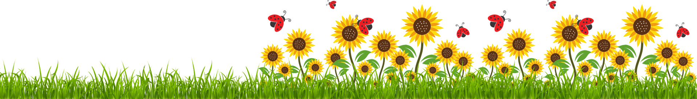
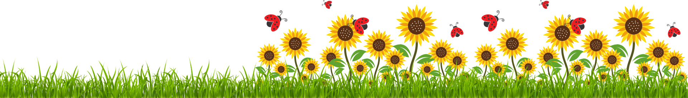

Tốt nghiệp rồi nhỉ...
Dù hai ta đã là m nô lệ tư bản từ lâu, nhưng đây vẫn là lần đầu tiên ta chÃnh thức bước qua cánh cá»a mới, và o một giai đoạn mới của đời người.
Tao rất vui vì đã được đồng hà nh cùng mà y đến hôm nay, thấm thoắt đã 10 năm rồi á má ^_^
Tao biết có thể mà y sẽ còn đi há»c tiếp. Hoặc không. Nhưng điá»u đó không ngăn ngà y nà y trở thà nh một ngà y đáng nhớ.
Nhân dịp nà y, tao sẽ mượn những món quà tao tặng mà y để gá»i những lá»i chúc tốt đẹp nhất cho mà y nhé. Chắc hơi nhiá»u đó (•_•)
Äầu tiên, với rất nhiá»u hoa hướng dÆ°Æ¡ng trên trang và mô hình logo hướng dÆ°Æ¡ng để bà n, tao mong mà y sẽ luôn hướng vỠánh mặt trá»i, giữ được nụ cười trên môi, tựa như ấn tượng mà y đã tạo cho tao suốt những năm qua. Dẫu đêm tối đôi khi vẫn sẽ có lúc mà y cảm thấy đau buồn, nhưng rồi hôm sau, tao tin mà y sẽ lại tÆ°Æ¡i sáng.
Thứ hai, chúc mà y sẽ sớm ngà y có một "căn nhà ", một "khoảnh trá»i" tự do của riêng mà y. Mà nếu nhấn và o căn nhà , mà y cũng sẽ thấy nhóc Maruko chạy ra, chạy mãi chạy mãi chạy vượt má»i chướng ngại váºt. à là , dù báºn rộn đến đâu, khó khăn đến đâu, thì mà y vẫn an tâm là đứa trẻ trong mà y sẽ cùng mà y đồng hà nh. Ai cũng mãi có một đứa trẻ trong tâm hồn thôi, không nhất thiết phải vội lớn chi đâu bạn hiá»n.
Thứ ba, với một cái đồng hồ hơi đơn giản, hi vá»ng mà y giữ gìn được work-life & work-rest ballance. Cái nà y quan trá»ng lắm đó, khá»i nói nhiá»u. Có sức khá»e là có tất.
Thứ tư, với rất nhiá»u bầu trá»i sao cùng Van Gogh, nguyện mà y vẫn luôn là một Song Ngư mơ mộng, có nhiá»u hoà i bão trong tim. Hi vá»ng má»—i lần có idea mới, có bà i thơ mới, có câu caption mới ghi và o sổ, hay khi láºt một trang sách mới, mà y sẽ lại thấy những bầu trá»i sao nỠđẹp biết nhường nà o.
Và cuối cùng, bằng hai táºp truyện tao đã thẩm (có anime Netflix nữa đó), chúc mà y tìm được tư bản cùng người sếp trong mơ như cách Momose đã vô tình ngước lên thấy bầu trá»i hi vá»ng.
Ngà y đặc biệt mà , chúc nhiá»u xÃu hi vá»ng cũng không sao. Chủ yếu hơn chúc chÃnh là muốn nhắn nhủ đến mà y đôi điá»u váºy thôi 💌
Hảo
Pomodoro đã hoà n thà nh: 0